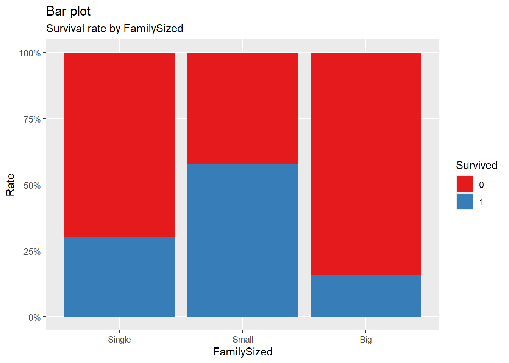

# Data input, assesment
library(titanic)
library(readr) # Data input with readr::read_csv()
library(descr) # descr::CrossTable() - Frequency by category, check with ratio figures
# Visualization
library(VIM) # Missing values assesment used by VIM::aggr()
library(RColorBrewer) # Plot color setting
library(scales) # plot setting - x, y axis
# Feature engineering, Data Pre-processing
library(tidyverse) # dplyr, ggplot2, purrr, etc.. # Feature Engineering & Data Pre-processing
library(ggpubr)
library(randomForest)
# Model validation
library(caret) # caret::confusionMatrix()
library(ROCR) # Plotting ROC CurveAbout ML & Modelling
EDA Review
Before attending class for Week 2, please complete the following tasks:
Watch the pre-class video for Week 2.
Submit Discussion #1. Note that submissions will not be accepted after class.
Ensure that your laptop has R and RStudio installed and ready to use.
Pre-class video
- What is ML?
- What is Modelling?
Discussion
Discussion #1
Class content
1. Introduction
It contains the analysis process of ‘Titanic’, one of the representative ‘Competition’ of ‘Kaggle’.
2. Prepare to work
2.1 Packages
see “What is a package in R”
This is the process of loading (loading) the Packages I used for analysis, in addition to the representative Packages of R, such as tidyverse (including ggplot2 and dplyr).
2.2 Raw data import
In titanic competition, train data used to create Model and test data used for actual prediction (estimation) are separated.
Here, we will load those two data and combine them into one. The reason for tying the separate data together is to work the same when feature engineering and pre-processing the input variables used in modeling.
Please see this link if you want to know about the story of Titanic.
titanic_train %>% glimpseRows: 891
Columns: 12
$ PassengerId <int> 1, 2, 3, 4, 5, 6, 7, 8, 9, 10, 11, 12, 13, 14, 15, 16, 17,…
$ Survived <int> 0, 1, 1, 1, 0, 0, 0, 0, 1, 1, 1, 1, 0, 0, 0, 1, 0, 1, 0, 1…
$ Pclass <int> 3, 1, 3, 1, 3, 3, 1, 3, 3, 2, 3, 1, 3, 3, 3, 2, 3, 2, 3, 3…
$ Name <chr> "Braund, Mr. Owen Harris", "Cumings, Mrs. John Bradley (Fl…
$ Sex <chr> "male", "female", "female", "female", "male", "male", "mal…
$ Age <dbl> 22, 38, 26, 35, 35, NA, 54, 2, 27, 14, 4, 58, 20, 39, 14, …
$ SibSp <int> 1, 1, 0, 1, 0, 0, 0, 3, 0, 1, 1, 0, 0, 1, 0, 0, 4, 0, 1, 0…
$ Parch <int> 0, 0, 0, 0, 0, 0, 0, 1, 2, 0, 1, 0, 0, 5, 0, 0, 1, 0, 0, 0…
$ Ticket <chr> "A/5 21171", "PC 17599", "STON/O2. 3101282", "113803", "37…
$ Fare <dbl> 7.2500, 71.2833, 7.9250, 53.1000, 8.0500, 8.4583, 51.8625,…
$ Cabin <chr> "", "C85", "", "C123", "", "", "E46", "", "", "", "G6", "C…
$ Embarked <chr> "S", "C", "S", "S", "S", "Q", "S", "S", "S", "C", "S", "S"…titanic_test %>% glimpseRows: 418
Columns: 11
$ PassengerId <int> 892, 893, 894, 895, 896, 897, 898, 899, 900, 901, 902, 903…
$ Pclass <int> 3, 3, 2, 3, 3, 3, 3, 2, 3, 3, 3, 1, 1, 2, 1, 2, 2, 3, 3, 3…
$ Name <chr> "Kelly, Mr. James", "Wilkes, Mrs. James (Ellen Needs)", "M…
$ Sex <chr> "male", "female", "male", "male", "female", "male", "femal…
$ Age <dbl> 34.5, 47.0, 62.0, 27.0, 22.0, 14.0, 30.0, 26.0, 18.0, 21.0…
$ SibSp <int> 0, 1, 0, 0, 1, 0, 0, 1, 0, 2, 0, 0, 1, 1, 1, 1, 0, 0, 1, 0…
$ Parch <int> 0, 0, 0, 0, 1, 0, 0, 1, 0, 0, 0, 0, 0, 0, 0, 0, 0, 0, 0, 0…
$ Ticket <chr> "330911", "363272", "240276", "315154", "3101298", "7538",…
$ Fare <dbl> 7.8292, 7.0000, 9.6875, 8.6625, 12.2875, 9.2250, 7.6292, 2…
$ Cabin <chr> "", "", "", "", "", "", "", "", "", "", "", "", "B45", "",…
$ Embarked <chr> "Q", "S", "Q", "S", "S", "S", "Q", "S", "C", "S", "S", "S"…train <- titanic_train
test <- titanic_test
full <- dplyr::bind_rows(train, test)
full %>% glimpseRows: 1,309
Columns: 12
$ PassengerId <int> 1, 2, 3, 4, 5, 6, 7, 8, 9, 10, 11, 12, 13, 14, 15, 16, 17,…
$ Survived <int> 0, 1, 1, 1, 0, 0, 0, 0, 1, 1, 1, 1, 0, 0, 0, 1, 0, 1, 0, 1…
$ Pclass <int> 3, 1, 3, 1, 3, 3, 1, 3, 3, 2, 3, 1, 3, 3, 3, 2, 3, 2, 3, 3…
$ Name <chr> "Braund, Mr. Owen Harris", "Cumings, Mrs. John Bradley (Fl…
$ Sex <chr> "male", "female", "female", "female", "male", "male", "mal…
$ Age <dbl> 22, 38, 26, 35, 35, NA, 54, 2, 27, 14, 4, 58, 20, 39, 14, …
$ SibSp <int> 1, 1, 0, 1, 0, 0, 0, 3, 0, 1, 1, 0, 0, 1, 0, 0, 4, 0, 1, 0…
$ Parch <int> 0, 0, 0, 0, 0, 0, 0, 1, 2, 0, 1, 0, 0, 5, 0, 0, 1, 0, 0, 0…
$ Ticket <chr> "A/5 21171", "PC 17599", "STON/O2. 3101282", "113803", "37…
$ Fare <dbl> 7.2500, 71.2833, 7.9250, 53.1000, 8.0500, 8.4583, 51.8625,…
$ Cabin <chr> "", "C85", "", "C123", "", "", "E46", "", "", "", "G6", "C…
$ Embarked <chr> "S", "C", "S", "S", "S", "Q", "S", "S", "S", "C", "S", "S"…The reason why rbind() was not used even when combining the two data into full is that Survived, the dependent variable (target variable, Y) of Titanic competition, does not exist in test. Therefore, the dimensions (dimension) of the two data do not match, so they are not merged with rbind(). However, if you use dplyr::bind_rows(), Survived in test is treated as NA and merged into one.
2.3 variable meaning explanation
| variable name | Interpretation (meaning) | Type |
|---|---|---|
| PassengerID | Unique ID number that identifies the passenger | Int |
| Survived | Indicates whether or not the passenger survived. Survival is 1 and death is 0. | Factor |
| Pclass | The class of the cabin, with 3 categories from 1st class (1) to 3rd class (3). | Ord.Factor |
| Name | Passenger’s name | Factor |
| Sex | Passenger’s gender | Factor |
| Age | Age of passenger | Numeric |
| SibSp | Variable describing the number of siblings or spouses accompanying each passenger. It can range from 0 to 8. | Integer |
| Parch | Variable describing the number of parents or children accompanying each passenger, from 0 to 9. | Integer |
| Ticket | String variable for the ticket the passenger boarded | Factor |
| Fare | Variable for how much the passenger has paid for the trip so far | Numeric |
| Cabin | Variable that distinguishes each passenger’s cabin, with too many categories and missing values. | Factor |
| Embarked | Indicates the boarding port and departure port, and consists of three categories: C, Q, and S. | Factor |
2.4 Change the variables type
Before the full-scale EDA and feature engineering, let’s transform some variable properties. For example, Pclass is treated as numeric, but actually 1, 2, 3 are factors representing 1st, 2nd, and 3rd grades.
full <- full %>%
dplyr::mutate(Survived = factor(Survived),
Pclass = factor(Pclass, ordered = T),
Name = factor(Name),
Sex = factor(Sex),
Ticket = factor(Ticket),
Cabin = factor(Cabin),
Embarked = factor(Embarked))3. EDA : Exploratory data analysis
It is the process of exploring and understanding raw data, such as how data is structured and whether there are missing values or outliers in it.
We will use various functions and visualizations here.
3.1 Data confirmation using numerical values
First of all, let’s check the data through the output of various functions such as head() and summary().
3.1.1 head()
head(full, 10) PassengerId Survived Pclass
1 1 0 3
2 2 1 1
3 3 1 3
4 4 1 1
5 5 0 3
6 6 0 3
7 7 0 1
8 8 0 3
9 9 1 3
10 10 1 2
Name Sex Age SibSp Parch
1 Braund, Mr. Owen Harris male 22 1 0
2 Cumings, Mrs. John Bradley (Florence Briggs Thayer) female 38 1 0
3 Heikkinen, Miss. Laina female 26 0 0
4 Futrelle, Mrs. Jacques Heath (Lily May Peel) female 35 1 0
5 Allen, Mr. William Henry male 35 0 0
6 Moran, Mr. James male NA 0 0
7 McCarthy, Mr. Timothy J male 54 0 0
8 Palsson, Master. Gosta Leonard male 2 3 1
9 Johnson, Mrs. Oscar W (Elisabeth Vilhelmina Berg) female 27 0 2
10 Nasser, Mrs. Nicholas (Adele Achem) female 14 1 0
Ticket Fare Cabin Embarked
1 A/5 21171 7.2500 S
2 PC 17599 71.2833 C85 C
3 STON/O2. 3101282 7.9250 S
4 113803 53.1000 C123 S
5 373450 8.0500 S
6 330877 8.4583 Q
7 17463 51.8625 E46 S
8 349909 21.0750 S
9 347742 11.1333 S
10 237736 30.0708 CLooking at the result of head(), we can see that there is a missing value (NA) in Age.
If so, is there only Age missing in the entire data?
For the answer, please refer to 3.2 Missing values.
3.1.2 str()
str(full)'data.frame': 1309 obs. of 12 variables:
$ PassengerId: int 1 2 3 4 5 6 7 8 9 10 ...
$ Survived : Factor w/ 2 levels "0","1": 1 2 2 2 1 1 1 1 2 2 ...
$ Pclass : Ord.factor w/ 3 levels "1"<"2"<"3": 3 1 3 1 3 3 1 3 3 2 ...
$ Name : Factor w/ 1307 levels "Abbing, Mr. Anthony",..: 156 287 531 430 23 826 775 922 613 855 ...
$ Sex : Factor w/ 2 levels "female","male": 2 1 1 1 2 2 2 2 1 1 ...
$ Age : num 22 38 26 35 35 NA 54 2 27 14 ...
$ SibSp : int 1 1 0 1 0 0 0 3 0 1 ...
$ Parch : int 0 0 0 0 0 0 0 1 2 0 ...
$ Ticket : Factor w/ 929 levels "110152","110413",..: 721 817 915 66 650 374 110 542 478 175 ...
$ Fare : num 7.25 71.28 7.92 53.1 8.05 ...
$ Cabin : Factor w/ 187 levels "","A10","A11",..: 1 108 1 72 1 1 165 1 1 1 ...
$ Embarked : Factor w/ 4 levels "","C","Q","S": 4 2 4 4 4 3 4 4 4 2 ...By combining the train and test data, the total number of observations (record, row, row) is 1309 (train: 891, test: 418), and the number of variables (column, feature, variable, column) is 12.
In addition, you can find out what the attributes of each variable are and how many categories there are for variables that are factor attributes.
In addition, in head(), it can be seen that the missing value (NA), which was thought to exist only in Age, also exists in other variables including Cabin.
3.1.3 summary()
summary(full) PassengerId Survived Pclass Name
Min. : 1 0 :549 1:323 Connolly, Miss. Kate : 2
1st Qu.: 328 1 :342 2:277 Kelly, Mr. James : 2
Median : 655 NA's:418 3:709 Abbing, Mr. Anthony : 1
Mean : 655 Abbott, Master. Eugene Joseph : 1
3rd Qu.: 982 Abbott, Mr. Rossmore Edward : 1
Max. :1309 Abbott, Mrs. Stanton (Rosa Hunt): 1
(Other) :1301
Sex Age SibSp Parch Ticket
female:466 Min. : 0.17 Min. :0.0000 Min. :0.000 CA. 2343: 11
male :843 1st Qu.:21.00 1st Qu.:0.0000 1st Qu.:0.000 1601 : 8
Median :28.00 Median :0.0000 Median :0.000 CA 2144 : 8
Mean :29.88 Mean :0.4989 Mean :0.385 3101295 : 7
3rd Qu.:39.00 3rd Qu.:1.0000 3rd Qu.:0.000 347077 : 7
Max. :80.00 Max. :8.0000 Max. :9.000 347082 : 7
NA's :263 (Other) :1261
Fare Cabin Embarked
Min. : 0.000 :1014 : 2
1st Qu.: 7.896 C23 C25 C27 : 6 C:270
Median : 14.454 B57 B59 B63 B66: 5 Q:123
Mean : 33.295 G6 : 5 S:914
3rd Qu.: 31.275 B96 B98 : 4
Max. :512.329 C22 C26 : 4
NA's :1 (Other) : 271 summary() provides a lot of information about the data.
The representative values of quantitative variables (Integer, Numeric), the number of categories of categorical (Factor) variables, and the number of observations belonging to each category are all shown as numerical values.
Here are the things to check and move on:
Survived: This is the target variable for this competition, and 418 missing values are due to the test data.
Pclass: There are three categories of 1st class, 2nd class, and 3rd class, and 3rd class passengers are the most.
Name: There are people with similar names. So you can see that some passengers are traveling alone, while others are traveling with their families.
Sex: There are almost twice as many males as females.
Age: It ranges from 0.17 to 80 years old, but it seems necessary to check whether it is an outlier that incorrectly entered 17, and there are 263 missing values.
SibSp: From 0 to 8, and the 3rd quartile is 1, so it can be seen that you boarded the Titanic with a couple or siblings.
Parch: It ranges from 0 to 9, but the fact that the 3rd quartile is 0 indicates that there are very few passengers with parents and children.
Both SibSp and Parch are variables representing family relationships. Through this, we will find out the total number of people in the family, although we do not know who was on board, and based on that, we will create a categorical derived variable called FamilySized that represents the size of the family.
Ticket: Looking at the result of 3.1.2 str(), you can see that some passengers have exactly the same ticket, some passengers have tickets overlapping only a certain part, and some passengers have completely different tickets. We plan to use this to create a derived variable called ticket.size.
Fare: 0 to 512, with 1 missing value. I care that the 3rd quartile is 31.275 and the max is 512.
Cabin: It has the most (1014) missing values among a total of 12 features. It’s a variable that represents the ship’s area, but if there’s no way to use it, I think it should be discarded.
Embarked: It consists of a total of 3 categories, S is the most, and there are 2 missing values.
When performing a basic exploration of the data, please look at the outputs of various functions besides summary() and str() while comparing them.
3.2 Missing values
This is the process of checking which variables have missing values mentioned above and how many of them exist.
I’m going to check it numerically and visually at the same time using the dplyr, ggplot2, and VIM packages.
You don’t have to use all the code I’ve run, you can use only the parts you think you need or like as you read.
3.2.1 VIM packages
VIM::aggr(full, prop = FALSE, combined = TRUE, numbers = TRUE,
sortVars = TRUE, sortCombs = TRUE)
Variables sorted by number of missings:
Variable Count
Survived 418
Age 263
Fare 1
PassengerId 0
Pclass 0
Name 0
Sex 0
SibSp 0
Parch 0
Ticket 0
Cabin 0
Embarked 03.2.2 tidyverse packages
In addition to checking missing values at once using the VIM package, these are methods for checking missing values using various packages that exist in the tidyverse.
First, find the proportion of missing values for each variable with dplyr.
full %>%
dplyr::summarize_all(funs(sum(is.na(.))/n()))Warning: `funs()` was deprecated in dplyr 0.8.0.
ℹ Please use a list of either functions or lambdas:
# Simple named list: list(mean = mean, median = median)
# Auto named with `tibble::lst()`: tibble::lst(mean, median)
# Using lambdas list(~ mean(., trim = .2), ~ median(., na.rm = TRUE)) PassengerId Survived Pclass Name Sex Age SibSp Parch Ticket
1 0 0.3193277 0 0 0 0.2009167 0 0 0
Fare Cabin Embarked
1 0.0007639419 0 0There is a way to check the proportion of missing values that exist in variables, but it can also be checked using visual data.
Please see the two bar plots below.
# Calculate the missing value ratio of each feature -> Data Frame property but has a structure of 1 row and 12 columns.
missing_values <- full %>%
dplyr::summarize_all(funs(sum(is.na(.))/n()))
missing_values %>% head PassengerId Survived Pclass Name Sex Age SibSp Parch Ticket
1 0 0.3193277 0 0 0 0.2009167 0 0 0
Fare Cabin Embarked
1 0.0007639419 0 0# Generate the missing_values obtained above as a 12X2 data frame
missing_values <- tidyr::gather(missing_values,
key = "feature", value = "missing_pct")
missing_values %>% head(12) feature missing_pct
1 PassengerId 0.0000000000
2 Survived 0.3193277311
3 Pclass 0.0000000000
4 Name 0.0000000000
5 Sex 0.0000000000
6 Age 0.2009167303
7 SibSp 0.0000000000
8 Parch 0.0000000000
9 Ticket 0.0000000000
10 Fare 0.0007639419
11 Cabin 0.0000000000
12 Embarked 0.0000000000# Visualization with missing_values
missing_values %>%
# Aesthetic setting : missing_pct 내림차순으로 정렬
ggplot(aes(x = reorder(feature, missing_pct), y = missing_pct)) +
# Bar plot
geom_bar(stat = "identity", fill = "red") +
# Title generation
ggtitle("Rate of missing values in each features") +
# Title detail setting
theme(plot.title = element_text(face = "bold", # 글씨체
hjust = 0.5, # Horizon(가로비율) = 0.5
size = 15, color = "darkblue")) +
# x, y axis label setting
labs(x = "Feature names", y = "Rate") +
# Plot의 x, y축 변환
coord_flip()
If you look at the bar graph above, you can check the percentage of missing values for all features.
However, what we are actually curious about is which variables have missing values and how many missing values exist in them.
Therefore, after calculating the proportion of missing values using the purrr package, I extracted only the variables that had at least one and visualized them.
# 변수별 결측치 비율 계산
miss_pct <- purrr::map_dbl(full, function(x){round((sum(is.na(x))/length(x)) * 100, 1) })
# 결측치 비율이 0%보다 큰 변수들만 선택
miss_pct <- miss_pct[miss_pct > 0]
# Data Frame 생성
data.frame(miss = miss_pct, var = names(miss_pct), row.names = NULL) %>%
# Aesthetic setting : miss 내림차순으로 정렬
ggplot(aes(x = reorder(var, miss), y = miss)) +
# Bar plot
geom_bar(stat = 'identity', fill = 'red') +
# Plot title setting
ggtitle("Rate of missing values") +
# Title detail setting
theme(plot.title = element_text(face = "bold", # 글씨체
hjust = 0.5, # Horizon(가로비율) = 0.5
size = 15, color = "darkblue")) +
# x, y axis label setting
labs(x = 'Feature names', y = 'Rate of missing values') +
# Plot의 x, y축 변환
coord_flip()
Through this, only 4 variables out of a total of 12 variables have missing values (except Survived because it is due to test data), and there are many missing values in the order of Cabin, Age, Embarked, and Fare.
Now, it is the process of analyzing and exploring feature through visualization.
3.3 Age
age.p1 <- full %>%
ggplot(aes(Age)) +
geom_histogram(breaks = seq(0, 80, by = 1), # interval setting
col = "red", # bar border color
fill = "green", # bar inner color
alpha = .5) + # Bar Transparency = 50%
# Plot title
ggtitle("All Titanic passengers age hitogram") +
theme(plot.title = element_text(face = "bold",
hjust = 0.5, # Horizon (horizontal ratio) = 0.5
size = 15, color = "darkblue"))
age.p2 <- full %>%
# Exclude values where Survived == NA in the test dataset
filter(!is.na(Survived)) %>%
ggplot(aes(Age, fill = Survived)) +
geom_density(alpha = .5) +
ggtitle("Titanic passengers age density plot") +
theme(plot.title = element_text(face = "bold", hjust = 0.5,
size = 15, color = "darkblue"))
# Display the two graphs created above on one screen
ggarrange(age.p1, age.p2, ncol=2)3.4 Pclass
Let’s visualize the frequency of passengers for each Pclass.
After grouping (grouping) by Pclass using dplyr package, Data Frame representing frequency by category was created and visualized with ggplot.
full %>%
# Get Pclass frequencies using dplyr::group_by(), summarize()
group_by(Pclass) %>%
summarize(N = n()) %>%
# Aesthetic setting
ggplot(aes(Pclass, N)) +
geom_col() +
geom_text(aes(label = N),
size = 5,
vjust = 1.2,
color = "#FFFFFF") +
# Plot title
ggtitle("Number of each Pclass's passengers") +
# Title setting
theme(plot.title = element_text(face = "bold", hjust = 0.5, size = 15)) +
# x, y axis name change
labs(x = "Pclass", y = "Count")
It can be seen that the largest number of passengers boarded in the 3-class cabin.
3.5 Fare
This is a visualization of the ‘Fare’ variable, which represents the amount paid by the passenger.
Two histograms and boxplots were used.
# Histogram
Fare.p1 <- full %>%
ggplot(aes(Fare)) +
geom_histogram(col = "yellow",
fill = "blue",
alpha = .5) +
ggtitle("Histogram of passengers Fare") +
theme(plot.title = element_text(face = "bold", hjust = 0.5, size = 15))
# Boxplot
Fare.p2 <- full %>%
filter(!is.na(Survived)) %>%
ggplot(aes(Survived, Fare)) +
# Observations are drawn as gray dots, but overlapping areas are spread out.
geom_jitter(col = "gray") +
# Boxplot: 50% transparency
geom_boxplot(alpha = .5) +
ggtitle("Boxplot of passengers Fare") +
theme(plot.title = element_text(face = "bold", hjust = 0.5, size = 15))
ggarrange(Fare.p1, Fare.p2, ncol=2)You can see that the survivors have a higher ‘Fare’ than the deceased passengers, but not by much.
3.6 Sex
Are there differences in survival rates between men and women? See the plot below.
sex.p1 <- full %>%
dplyr::group_by(Sex) %>%
summarize(N = n()) %>%
ggplot(aes(Sex, N)) +
geom_col() +
geom_text(aes(label = N), size = 5, vjust = 1.2, color = "#FFFFFF") +
ggtitle("Bar plot of Sex") +
labs(x = "Sex", y = "Count")
sex.p2 <- full[1:891, ] %>%
ggplot(aes(Sex, fill = Survived)) +
geom_bar(position = "fill") +
scale_fill_brewer(palette = "Set1") +
scale_y_continuous(labels = percent) +
ggtitle("Survival Rate by Sex") +
labs(x = "Sex", y = "Rate")
ggarrange(sex.p1, sex.p2, ncol = 2)
mosaicplot(Survived ~ Sex,
data = full[1:891, ], col = TRUE,
main = "Survival rate by passengers gender")
If you interpret the graph, you can see that the survival rate is higher for female passengers, while there are far more males than females.
4. Feature engineering & Data Pre-processing
This is the process of filling in missing values (‘NA’) based on the contents of ‘Chapter 3 EDA’ and creating derived variables at the same time.
4.1 Age -> Age.Group
full <- full %>%
# The missing value (NA) is filled in first, and the average of the values excluding the missing value is filled.
mutate(Age = ifelse(is.na(Age), mean(full$Age, na.rm = TRUE), Age),
# Create a categorical derived variable Age.Group based on Age values
Age.Group = case_when(Age < 13 ~ "Age.0012",
Age >= 13 & Age < 18 ~ "Age.1317",
Age >= 18 & Age < 60 ~ "Age.1859",
Age >= 60 ~ "Age.60inf"),
# Convert Chr attribute to Factor
Age.Group = factor(Age.Group))4.3 SibSp & Parch -> FamilySized
full <- full %>%
# First create a derived variable called FamilySize by adding SibSp, Parch and 1 (self)
mutate(FamilySize = .$SibSp + .$Parch + 1,
# Create a categorical derived variable FamilySized according to the value of FamilySize
FamilySized = dplyr::case_when(FamilySize == 1 ~ "Single",
FamilySize >= 2 & FamilySize < 5 ~ "Small",
FamilySize >= 5 ~ "Big"),
# Convert the Chr property FamilySized to a factor
# Assign new levels according to the size of the group size
FamilySized = factor(FamilySized, levels = c("Single", "Small", "Big")))Ceated FamilySized using SibSp and Parch.
Reducing these two variables to one has the advantage of simplifying the model.
A similar use case is to combine height and weight into a BMI index.
4.4 Name & Sex -> title
When looking at the results of ‘Chapter 3.6 Sex’, it was confirmed that the survival rate of women was higher than that of men.
Therefore, in Name, “Wouldn’t it be useful to extract only names related to gender and categorize them?” I think it is.
First, extract only the column vector named Name from full data and save it as title.
# First, extract only the Name column vector and store it in the title vector
title <- full$Name
title %>% head(20) [1] Braund, Mr. Owen Harris
[2] Cumings, Mrs. John Bradley (Florence Briggs Thayer)
[3] Heikkinen, Miss. Laina
[4] Futrelle, Mrs. Jacques Heath (Lily May Peel)
[5] Allen, Mr. William Henry
[6] Moran, Mr. James
[7] McCarthy, Mr. Timothy J
[8] Palsson, Master. Gosta Leonard
[9] Johnson, Mrs. Oscar W (Elisabeth Vilhelmina Berg)
[10] Nasser, Mrs. Nicholas (Adele Achem)
[11] Sandstrom, Miss. Marguerite Rut
[12] Bonnell, Miss. Elizabeth
[13] Saundercock, Mr. William Henry
[14] Andersson, Mr. Anders Johan
[15] Vestrom, Miss. Hulda Amanda Adolfina
[16] Hewlett, Mrs. (Mary D Kingcome)
[17] Rice, Master. Eugene
[18] Williams, Mr. Charles Eugene
[19] Vander Planke, Mrs. Julius (Emelia Maria Vandemoortele)
[20] Masselmani, Mrs. Fatima
1307 Levels: Abbing, Mr. Anthony ... Zimmerman, Mr. Leo# Using regular expression and gsub(), extract only names that are highly related to gender and save them as title vectors
title <- gsub("^.*, (.*?)\\..*$", "\\1", title)
title %>% head(20) [1] "Mr" "Mrs" "Miss" "Mrs" "Mr" "Mr" "Mr" "Master"
[9] "Mrs" "Mrs" "Miss" "Miss" "Mr" "Mr" "Miss" "Mrs"
[17] "Master" "Mr" "Mrs" "Mrs" # Save the title vector saved above to full again, but save it as a title derived variable
full$title <- title
full$title %>% head(20) [1] "Mr" "Mrs" "Miss" "Mrs" "Mr" "Mr" "Mr" "Master"
[9] "Mrs" "Mrs" "Miss" "Miss" "Mr" "Mr" "Miss" "Mrs"
[17] "Master" "Mr" "Mrs" "Mrs" gsub("^.*, (.*?)\\..*$", "\\1", title) In short, this code uses gsub to search for and replace a pattern in the title string, where the pattern is defined by the regular expression "^.*, (.*?)\\..*$" and the replacement is defined by the string "\\1". If you want to understand more about regular expression. Please see my blog post: What are Regular Expressions and How to Use Them in R
Then check what are the Unique titles.
unique(full$title) [1] "Mr" "Mrs" "Miss" "Master" "Don"
[6] "Rev" "Dr" "Mme" "Ms" "Major"
[11] "Lady" "Sir" "Mlle" "Col" "Capt"
[16] "the Countess" "Jonkheer" "Dona" You can see that there are 18 categories in total.
If you use this derived variable called ‘title’ as it is, the complexity of the model (especially the tree based model) increases considerably, so you need to reduce the category.
Before that, let’s check the frequency and rate for each category using the descr package.
# Check frequency, ratio by category
descr::CrossTable(full$title) Cell Contents
|-------------------------|
| N |
| N / Row Total |
|-------------------------|
| Capt | Col | Don | Dona | Dr |
|--------------|--------------|--------------|--------------|--------------|
| 1 | 4 | 1 | 1 | 8 |
| 0.001 | 0.003 | 0.001 | 0.001 | 0.006 |
|--------------|--------------|--------------|--------------|--------------|
| Jonkheer | Lady | Major | Master | Miss |
|--------------|--------------|--------------|--------------|--------------|
| 1 | 1 | 2 | 61 | 260 |
| 0.001 | 0.001 | 0.002 | 0.047 | 0.199 |
|--------------|--------------|--------------|--------------|--------------|
| Mlle | Mme | Mr | Mrs | Ms |
|--------------|--------------|--------------|--------------|--------------|
| 2 | 1 | 757 | 197 | 2 |
| 0.002 | 0.001 | 0.578 | 0.150 | 0.002 |
|--------------|--------------|--------------|--------------|--------------|
| Rev | Sir | the Countess |
|--------------|--------------|--------------|
| 8 | 1 | 1 |
| 0.006 | 0.001 | 0.001 |
|--------------|--------------|--------------|The frequencies and proportions of the 18 categories are very different.
So let’s narrow these down to a total of five categories.
# Simplify into 5 categories
full <- full %>%
# If you use "==" instead of "%in%", it won't work as you want because of Recyling Rule.
mutate(title = ifelse(title %in% c("Mlle", "Ms", "Lady", "Dona"), "Miss", title),
title = ifelse(title == "Mme", "Mrs", title),
title = ifelse(title %in% c("Capt", "Col", "Major", "Dr", "Rev", "Don",
"Sir", "the Countess", "Jonkheer"), "Officer", title),
title = factor(title))
# After creating the derived variable, check the frequency and ratio for each category
descr::CrossTable(full$title) Cell Contents
|-------------------------|
| N |
| N / Row Total |
|-------------------------|
| Master | Miss | Mr | Mrs | Officer |
|---------|---------|---------|---------|---------|
| 61 | 266 | 757 | 198 | 27 |
| 0.047 | 0.203 | 0.578 | 0.151 | 0.021 |
|---------|---------|---------|---------|---------|4.5 Ticket -> ticket.size
As we saw in Chapter 3.1.3 Summary(), the number of passengers (train and test together) is 1309. However, all passengers’ tickets are not different.
See the results of summary() and unique() below.
# We used length() to get only the number of unique categories.
length(unique(full$Ticket))[1] 929# Printing all of them was too messy, so only 10 were printed.
head(summary(full$Ticket), 10) CA. 2343 1601 CA 2144 3101295 347077 347082
11 8 8 7 7 7
PC 17608 S.O.C. 14879 113781 19950
7 7 6 6 Why are there 929 unique tickets when there are no missing values in feature?
Even the ticket is CA. There are 11 exactly the same number of people as 2343.
Let’s see who the passengers are.
full %>%
# Filter only 11 passengers with matching tickets
filter(Ticket == "CA. 2343") %>%
# We don't need to check for all variables, so we only want to look at the variables below.
select(Pclass, Name, Age, FamilySized) Pclass Name Age FamilySized
1 3 Sage, Master. Thomas Henry 29.88114 Big
2 3 Sage, Miss. Constance Gladys 29.88114 Big
3 3 Sage, Mr. Frederick 29.88114 Big
4 3 Sage, Mr. George John Jr 29.88114 Big
5 3 Sage, Miss. Stella Anna 29.88114 Big
6 3 Sage, Mr. Douglas Bullen 29.88114 Big
7 3 Sage, Miss. Dorothy Edith "Dolly" 29.88114 Big
8 3 Sage, Miss. Ada 29.88114 Big
9 3 Sage, Mr. John George 29.88114 Big
10 3 Sage, Master. William Henry 14.50000 Big
11 3 Sage, Mrs. John (Annie Bullen) 29.88114 BigYou can see that the 11 passengers above are all from the same family, brothers.
While there are passengers whose tickets are exactly the same, there are also passengers whose tickets are partially matched.
Create a ticket.unique derived variable that represents the number of unique numbers (number of characters) of such a ticket.
Let’s create a derived variable ticket.size with 3 categories based on ticket.unique.
# First of all, ticket.unique is saved as all 0
ticket.unique <- rep(0, nrow(full))
# Extract only the unique ones from ticket features and store them in the tickets vector
tickets <- unique(full$Ticket)
# After extracting only passengers with the same ticket by using overlapping loops, extract and store the length (number of characters) of each ticket.
for (i in 1:length(tickets)) {
current.ticket <- tickets[i]
party.indexes <- which(full$Ticket == current.ticket)
# For loop 중첩
for (k in 1:length(party.indexes)) {
ticket.unique[party.indexes[k]] <- length(party.indexes)
}
}
# Save ticket.unique calculated above as a derived variable
full$ticket.unique <- ticket.unique
# Create ticket.size variable by dividing it into three categories according to ticket.unique
full <- full %>%
mutate(ticket.size = case_when(ticket.unique == 1 ~ 'Single',
ticket.unique < 5 & ticket.unique >= 2 ~ "Small",
ticket.unique >= 5 ~ "Big"),
ticket.size = factor(ticket.size,
levels = c("Single", "Small", "Big")))4.6 Embarked
This is feature with two missing values (NA). In the case of Embarked, replace it with S, which is the most frequent value among the three categories.
full$Embarked <- replace(full$Embarked, # Specify Data$feature to replace
which(is.na(full$Embarked)), # Find only missing values
'S') # specify the value to replace4.7 Fare
For Fare, there was only one missing value.
Based on the histogram seen above (Chapter 3.5 Fare), missing values are replaced with 0.
full$Fare <- replace(full$Fare, which(is.na(full$Fare)), 0)At this point, data preprocessing is complete.
The following is the process of selecting the variables to be used for model creation while exploring the derived variables created so far.
In other words, Feature selection.
5. Relationship to target feature Survived & Feature selection
Prior to full-scale visualization, since the purpose here is to see how well each variable correlates with the survival rate, we did not use the entire full data, but only the train data set that can determine survival and death.
Also, please note that the plot used above may be duplicated as it is.
5.0 Data set split
First, use the code below to split preprocessed full data into train and test.
# Before feature selection, select all variables first.
train <- full[1:891, ]
test <- full[892:1309, ]5.1 Pclass
train %>%
ggplot(aes(Pclass, fill = Survived)) +
geom_bar(position = "fill") +
# Set plot theme: Converts to a more vivid color.
scale_fill_brewer(palette = "Set1") +
# Y axis setting
scale_y_continuous(labels = percent) +
# Set x, y axis names and plot main title, sub title
labs(x = "Pclass", y = "Rate",
title = "Bar plot", subtitle = "How many people survived in each Pclass?")5.2 Sex
Same as Chapter 3.6 Sex.
mosaicplot(Survived ~ Sex,
data = train, col = TRUE,
main = "Survival rate by passengers gender")
5.3 Embarked
train %>%
ggplot(aes(Embarked, fill = Survived)) +
geom_bar(position = "fill") +
scale_fill_brewer(palette = "Set1") +
scale_y_continuous(labels = percent) +
labs(x = "Embarked", y = "Rate",
title = "Bar plot", subtitle = "How many people survived in each Embarked?")
5.4 FamilySized
train %>%
ggplot(aes(FamilySized, fill = Survived)) +
geom_bar(position = "fill") +
scale_fill_brewer(palette = "Set1") +
scale_y_continuous(labels = percent) +
labs(x = "FamilySized", y = "Rate",
title = "Bar plot", subtitle = "Survival rate by FamilySized")
It can be seen that there is a difference in survival rate depending on the number of people on board, and that ‘FamilySized’ and ‘Survived’ have a non-linear relationship.
5.5 Age.Group
train %>%
ggplot(aes(Age.Group, fill = Survived)) +
geom_bar(position = "fill") +
scale_fill_brewer(palette = "Set1") +
scale_y_continuous(labels = percent) +
labs(x = "Age group", y = "Rate",
title = "Bar plot", subtitle = "Survival rate by Age group")5.6 title
train %>%
ggplot(aes(title, fill = Survived)) +
geom_bar(position = "fill") +
scale_fill_brewer(palette = "Set1") +
scale_y_continuous(labels = percent) +
labs(x = "title", y = "Rate",
title = "Bar plot", subtitle = "Survival rate by passengers title")
5.7 ticket.size
train %>%
ggplot(aes(ticket.size, fill = Survived)) +
geom_bar(position = "fill") +
scale_fill_brewer(palette = "Set1") +
scale_y_continuous(labels = percent) +
labs(x = "ticket.size", y = "Rate",
title = "Bar plot", subtitle = "Survival rate by ticket.size")
5.8 Description of actual used features
Now that all the derived variables created so far have been found to be useful, select and save only the variables you will actually use.
The table below is a brief description of the actual selected variables.
| variable name | Type | Description |
|---|---|---|
| Survived | factor | Target feature, survival == 1, death == 0 |
| Sex | factor | gender, male or female |
| Pclass | factor | Cabin Class, First Class (1), Second Class (2), Third Class (3) |
| Embarked | factor | Port of embarkation, Southampton (S), Cherbourg (C), Queenstown (Q) |
| FamilySized | factor | Family size, a derived variable created using SibSp and Parch, with 3 categories |
| Age.Group | factor | Age group, a derived variable created using Age, with 4 categories |
| title | factor | A part of the name, a derived variable made using Name, and 5 categories |
| ticket.size | factor | The length of the unique part of the ticket, a derived variable created using ticket, with 3 categories |
# Excluding ID number, select and save 7 input variables and 1 target variable to actually use
train <- train %>%
select("Pclass", "Sex", "Embarked", "FamilySized",
"Age.Group", "title", "ticket.size", "Survived")
# For Submit, extract the Id column vector and store it in ID
ID <- test$PassengerId
# Select and save the remaining 6 variables except for Id and Survived
test <- test %>%
select("Pclass", "Sex", "Embarked", "FamilySized",
"Age.Group", "title", "ticket.size")6. Machine learning model generation
Now is the time to create a machine learning model using the train data set.
Originally, it is correct to create train, validation, test data sets first, create various models, and then select the final model through cross validation (CV, Cross Validation), but these processes are omitted here and RandomForest After creating only, we will predict (estimate) the test data and even create data to Submit to competition.
6.1 Random Forest model generation
# Set the seed number for reproducibility.
set.seed(1901)
titanic.rf <- randomForest(Survived ~ ., data = train, importance = T, ntree = 2000)6.2 Feature importance check
importance(titanic.rf) 0 1 MeanDecreaseAccuracy MeanDecreaseGini
Pclass 47.442449 53.94070 64.73724 36.807804
Sex 54.250630 37.30378 58.66109 57.223102
Embarked -6.328112 38.10930 27.32587 9.632958
FamilySized 32.430898 31.24383 50.13349 18.086894
Age.Group 15.203313 26.72696 29.36321 10.201187
title 48.228450 41.60124 57.02653 73.146999
ticket.size 39.544367 37.80849 59.59915 22.570142varImpPlot(titanic.rf)6.3 Predict test data and create submit data
# Prediction
pred.rf <- predict(object = titanic.rf, newdata = test, type = "class")
# Data frame generation
submit <- data.frame(PassengerID = ID, Survived = pred.rf)
# Write the submit data frame to file : csv is created in the folder designated by setwd().
write.csv(submit, file = './titanic_submit.csv', row.names = F)